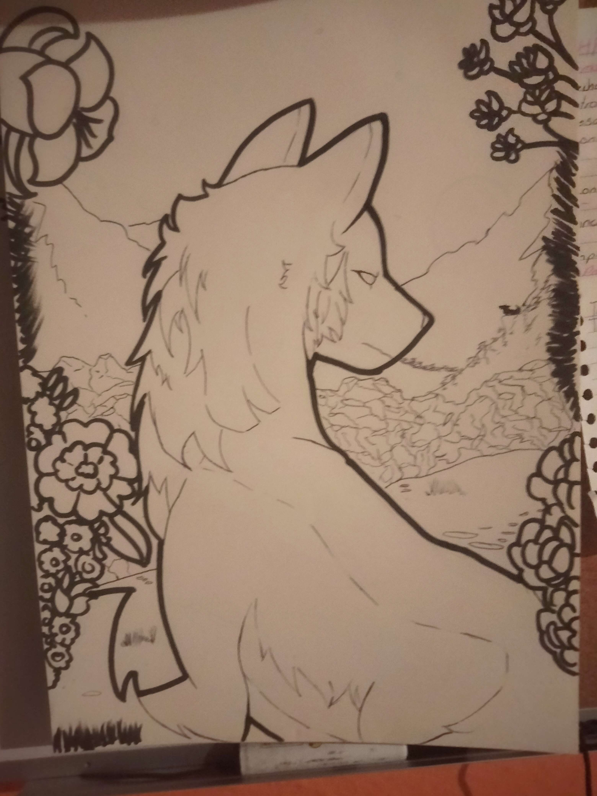
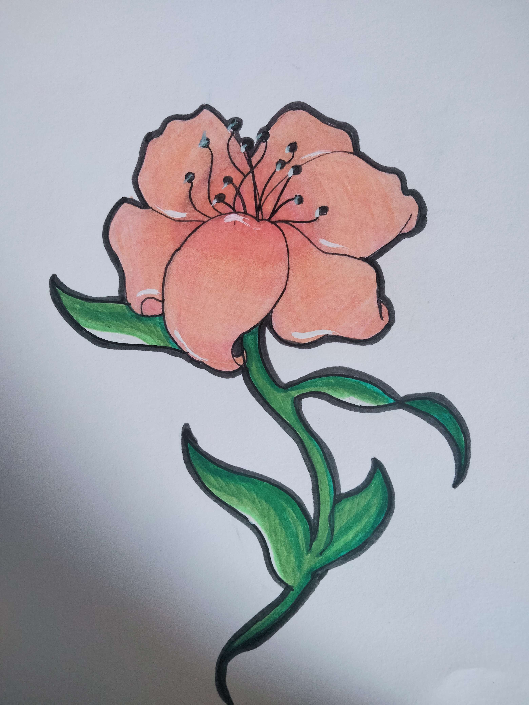
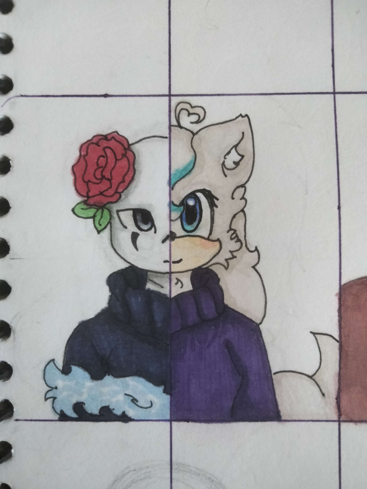
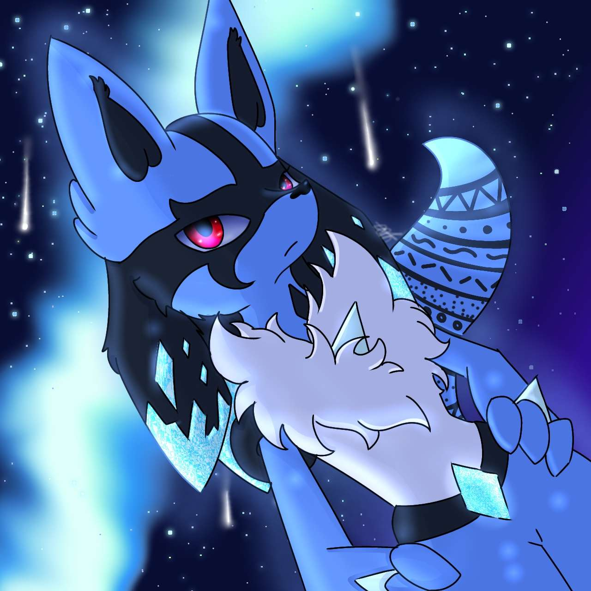
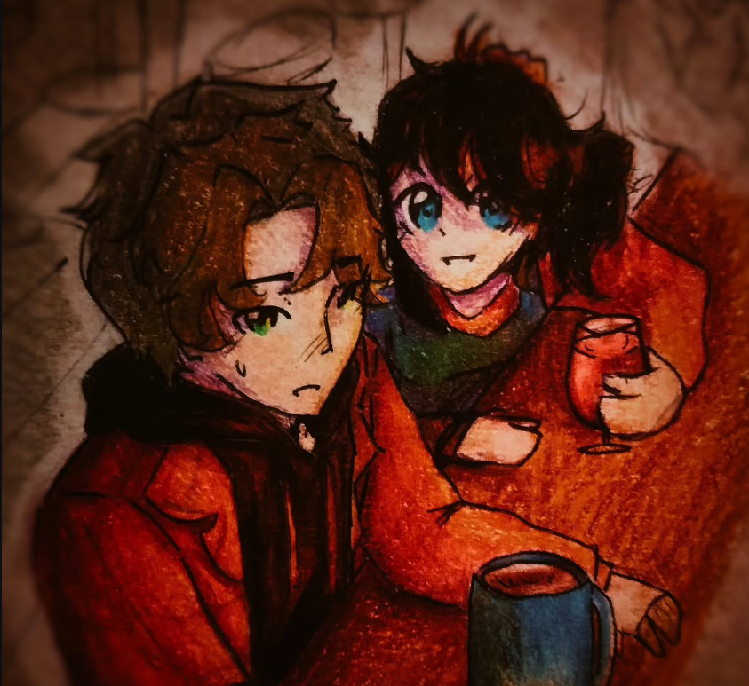
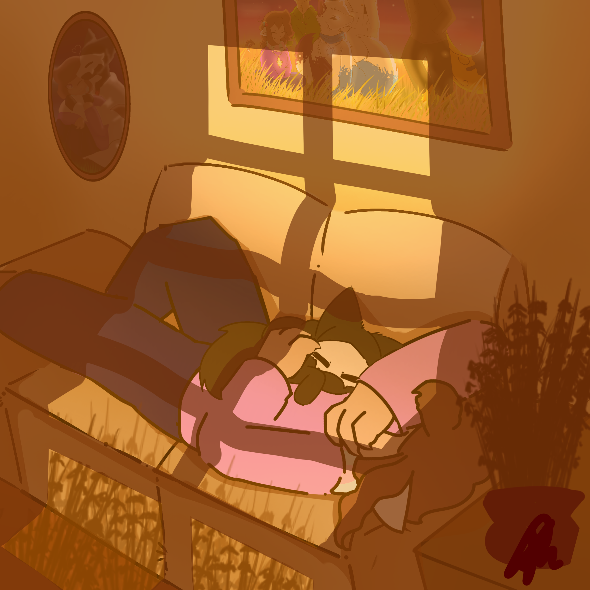
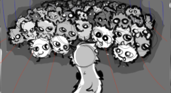
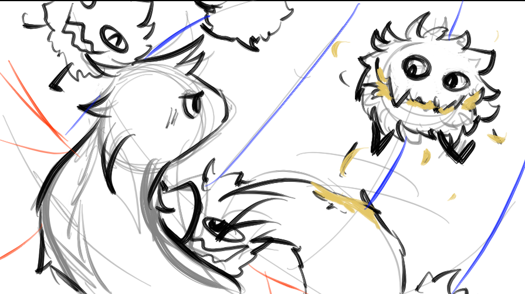
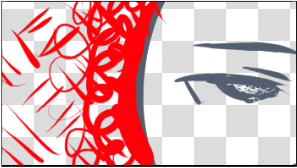

DIBUJOS
Una colección de arte que incluye bocetos a mano, obras digitales y la planificación visual de proyectos (Storyboards).
Tradicionales
Aunque muchas veces estos son los que olvido para no volverlos a ver, me encanta probar nuevas tecnicas en tradicional seguido.



Digitales
Mnejo diferentes estilos de dibujo digital, sin embargo suelo enfocarme en un estilo más tierno, regordete.



Storyboard
Un pequeño vistazo a algunos keyframes durnte los storyboards más detallados


